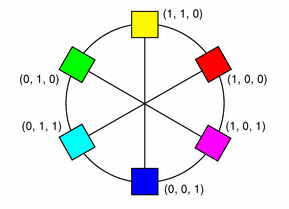
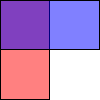
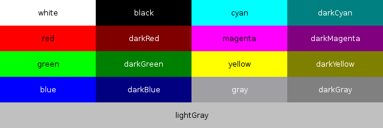

QColor¶

Synopsis¶
Functions¶
- def
__eq__(c) - def
__ne__(c) - def
__reduce__() - def
__repr__() - def
__setstate__(arg__1) - def
__str__() - def
alpha() - def
alphaF() - def
black() - def
blackF() - def
blue() - def
blueF() - def
convertTo(colorSpec) - def
cyan() - def
cyanF() - def
dark([f=200]) - def
darker([f=200]) - def
getCmyk() - def
getCmykF() - def
getHsl() - def
getHslF() - def
getHsv() - def
getHsvF() - def
getRgb() - def
getRgbF() - def
green() - def
greenF() - def
hslHue() - def
hslHueF() - def
hslSaturation() - def
hslSaturationF() - def
hsvHue() - def
hsvHueF() - def
hsvSaturation() - def
hsvSaturationF() - def
hue() - def
hueF() - def
isValid() - def
light([f=150]) - def
lighter([f=150]) - def
lightness() - def
lightnessF() - def
magenta() - def
magentaF() - def
name() - def
name(format) - def
operator=(color) - def
red() - def
redF() - def
rgb() - def
rgba() - def
saturation() - def
saturationF() - def
setAlpha(alpha) - def
setAlphaF(alpha) - def
setBlue(blue) - def
setBlueF(blue) - def
setCmyk(c, m, y, k[, a=255]) - def
setCmykF(c, m, y, k[, a=1.0]) - def
setGreen(green) - def
setGreenF(green) - def
setHsl(h, s, l[, a=255]) - def
setHslF(h, s, l[, a=1.0]) - def
setHsv(h, s, v[, a=255]) - def
setHsvF(h, s, v[, a=1.0]) - def
setNamedColor(name) - def
setRed(red) - def
setRedF(red) - def
setRgb(r, g, b[, a=255]) - def
setRgb(rgb) - def
setRgbF(r, g, b[, a=1.0]) - def
setRgba(rgba) - def
spec() - def
toCmyk() - def
toHsl() - def
toHsv() - def
toRgb() - def
toTuple() - def
value() - def
valueF() - def
yellow() - def
yellowF()
Static functions¶
- def
colorNames() - def
fromCmyk(c, m, y, k[, a=255]) - def
fromCmykF(c, m, y, k[, a=1.0]) - def
fromHsl(h, s, l[, a=255]) - def
fromHslF(h, s, l[, a=1.0]) - def
fromHsv(h, s, v[, a=255]) - def
fromHsvF(h, s, v[, a=1.0]) - def
fromRgb(r, g, b[, a=255]) - def
fromRgb(rgb) - def
fromRgbF(r, g, b[, a=1.0]) - def
fromRgba64(r, g, b[, a=USHRT_MAX]) - def
fromRgba(rgba) - def
isValidColor(name)
Detailed Description¶
The
PySide2.QtGui.QColorclass provides colors based on RGB, HSV or CMYK values.A color is normally specified in terms of RGB (red, green, and blue) components, but it is also possible to specify it in terms of HSV (hue, saturation, and value) and CMYK (cyan, magenta, yellow and black) components. In addition a color can be specified using a color name. The color name can be any of the SVG 1.0 color names.
RGB HSV CMYK  The
PySide2.QtGui.QColorconstructor creates the color based on RGB values. To create aPySide2.QtGui.QColorbased on either HSV or CMYK values, use thePySide2.QtGui.QColor.toHsv()andPySide2.QtGui.QColor.toCmyk()functions respectively. These functions return a copy of the color using the desired format. In addition the staticPySide2.QtGui.QColor.fromRgb(),PySide2.QtGui.QColor.fromHsv()andPySide2.QtGui.QColor.fromCmyk()functions create colors from the specified values. Alternatively, a color can be converted to any of the three formats using thePySide2.QtGui.QColor.convertTo()function (returning a copy of the color in the desired format), or any of thePySide2.QtGui.QColor.setRgb(),PySide2.QtGui.QColor.setHsv()andPySide2.QtGui.QColor.setCmyk()functions altering this color’s format. ThePySide2.QtGui.QColor.spec()function tells how the color was specified.A color can be set by passing an RGB string (such as “#112233”), or an ARGB string (such as “#ff112233”) or a color name (such as “blue”), to the
PySide2.QtGui.QColor.setNamedColor()function. The color names are taken from the SVG 1.0 color names. ThePySide2.QtGui.QColor.name()function returns the name of the color in the format “#RRGGBB”. Colors can also be set usingPySide2.QtGui.QColor.setRgb(),PySide2.QtGui.QColor.setHsv()andPySide2.QtGui.QColor.setCmyk(). To get a lighter or darker color use thePySide2.QtGui.QColor.lighter()andPySide2.QtGui.QColor.darker()functions respectively.The
PySide2.QtGui.QColor.isValid()function indicates whether aPySide2.QtGui.QColoris legal at all. For example, a RGB color with RGB values out of range is illegal. For performance reasons,PySide2.QtGui.QColormostly disregards illegal colors, and for that reason, the result of using an invalid color is undefined.The color components can be retrieved individually, e.g with
PySide2.QtGui.QColor.red(),PySide2.QtGui.QColor.hue()andPySide2.QtGui.QColor.cyan(). The values of the color components can also be retrieved in one go using thePySide2.QtGui.QColor.getRgb(),PySide2.QtGui.QColor.getHsv()andPySide2.QtGui.QColor.getCmyk()functions. Using the RGB color model, the color components can in addition be accessed withPySide2.QtGui.QColor.rgb().There are several related non-members:
QRgbis a typdef for an unsigned int representing the RGB value triplet (r, g, b). Note that it also can hold a value for the alpha-channel (for more information, see theAlpha-Blended Drawingsection). TheqRed(),qBlue()andqGreen()functions return the respective component of the givenQRgbvalue, while theqRgb()andqRgba()functions create and return theQRgbtriplet based on the given component values. Finally, theqAlpha()function returns the alpha component of the providedQRgb, and theqGray()function calculates and return a gray value based on the given value.
PySide2.QtGui.QColoris platform and device independent. ThePySide2.QtWidgets.QColormapclass maps the color to the hardware.For more information about painting in general, see the Paint System documentation.


Integer vs. Floating Point Precision¶
PySide2.QtGui.QColorsupports floating point precision and provides floating point versions of all the color components functions, e.g.PySide2.QtGui.QColor.getRgbF(),PySide2.QtGui.QColor.hueF()andPySide2.QtGui.QColor.fromCmykF(). Note that since the components are stored using 16-bit integers, there might be minor deviations between the values set using, for example,PySide2.QtGui.QColor.setRgbF()and the values returned by thePySide2.QtGui.QColor.getRgbF()function due to rounding.While the integer based functions take values in the range 0-255 (except
PySide2.QtGui.QColor.hue()which must have values within the range 0-359), the floating point functions accept values in the range 0.0 - 1.0.
Alpha-Blended Drawing¶
PySide2.QtGui.QColoralso support alpha-blended outlining and filling. The alpha channel of a color specifies the transparency effect, 0 represents a fully transparent color, while 255 represents a fully opaque color. For example:# Specify semi-transparent red painter.setBrush(QColor(255, 0, 0, 127)) painter.drawRect(0, 0, self.width()/2, self.height()) # Specify semi-transparent blue painter.setBrush(QColor(0, 0, 255, 127)) painter.drawRect(0, 0, self.width(), self.height()/2)The code above produces the following output:
The alpha channel of a color can be retrieved and set using the
PySide2.QtGui.QColor.alpha()andPySide2.QtGui.QColor.setAlpha()functions if its value is an integer, andPySide2.QtGui.QColor.alphaF()andPySide2.QtGui.QColor.setAlphaF()if its value is qreal (double). By default, the alpha-channel is set to 255 (opaque). To retrieve and set all the RGB color components (including the alpha-channel) in one go, use thePySide2.QtGui.QColor.rgba()andPySide2.QtGui.QColor.setRgba()functions.
Predefined Colors¶
There are 20 predefined QColors described by the
Qt.GlobalColorenum, including black, white, primary and secondary colors, darker versions of these colors and three shades of gray.PySide2.QtGui.QColoralso recognizes a variety of color names; the staticPySide2.QtGui.QColor.colorNames()function returns aPySide2.QtCore.QStringListcolor names thatPySide2.QtGui.QColorknows about.Additionally, the
Qt.color0,Qt.color1andQt.transparentcolors are used for special purposes.
Qt.color0(zero pixel value) andQt.color1(non-zero pixel value) are special colors for drawing in QBitmaps. Painting withQt.color0sets the bitmap bits to 0 (transparent; i.e., background), and painting withQt.color1sets the bits to 1 (opaque; i.e., foreground).
Qt.transparentis used to indicate a transparent pixel. When painting with this value, a pixel value will be used that is appropriate for the underlying pixel format in use.
The HSV Color Model¶
The RGB model is hardware-oriented. Its representation is close to what most monitors show. In contrast, HSV represents color in a way more suited to the human perception of color. For example, the relationships “stronger than”, “darker than”, and “the opposite of” are easily expressed in HSV but are much harder to express in RGB.
HSV, like RGB, has three components:
H, for hue, is in the range 0 to 359 if the color is chromatic (not gray), or meaningless if it is gray. It represents degrees on the color wheel familiar to most people. Red is 0 (degrees), green is 120, and blue is 240.
S, for saturation, is in the range 0 to 255, and the bigger it is, the stronger the color is. Grayish colors have saturation near 0; very strong colors have saturation near 255.
V, for value, is in the range 0 to 255 and represents lightness or brightness of the color. 0 is black; 255 is as far from black as possible.
Here are some examples: pure red is H=0, S=255, V=255; a dark red, moving slightly towards the magenta, could be H=350 (equivalent to -10), S=255, V=180; a grayish light red could have H about 0 (say 350-359 or 0-10), S about 50-100, and S=255.
Qt returns a hue value of -1 for achromatic colors. If you pass a hue value that is too large, Qt forces it into range. Hue 360 or 720 is treated as 0; hue 540 is treated as 180.
In addition to the standard HSV model, Qt provides an alpha-channel to feature
alpha-blended drawing.


The HSL Color Model¶
HSL is similar to HSV, however instead of the Value parameter, HSL specifies a Lightness parameter.
The CMYK Color Model¶
While the RGB and HSV color models are used for display on computer monitors, the CMYK model is used in the four-color printing process of printing presses and some hard-copy devices.
CMYK has four components, all in the range 0-255: cyan (C), magenta (M), yellow (Y) and black (K). Cyan, magenta and yellow are called subtractive colors; the CMYK color model creates color by starting with a white surface and then subtracting color by applying the appropriate components. While combining cyan, magenta and yellow gives the color black, subtracting one or more will yield any other color. When combined in various percentages, these three colors can create the entire spectrum of colors.
Mixing 100 percent of cyan, magenta and yellow does produce black, but the result is unsatisfactory since it wastes ink, increases drying time, and gives a muddy colour when printing. For that reason, black is added in professional printing to provide a solid black tone; hence the term ‘four color process’.
In addition to the standard CMYK model, Qt provides an alpha-channel to feature
alpha-blended drawing.
-
class
PySide2.QtGui.QColor¶ -
class
PySide2.QtGui.QColor(arg__1) -
class
PySide2.QtGui.QColor(color) -
class
PySide2.QtGui.QColor(color) -
class
PySide2.QtGui.QColor(name) -
class
PySide2.QtGui.QColor(r, g, b[, a=255]) -
class
PySide2.QtGui.QColor(rgb) Parameters: - r –
PySide2.QtCore.int - b –
PySide2.QtCore.int - a –
PySide2.QtCore.int - color –
PySide2.QtCore.Qt.GlobalColor - name – unicode
- g –
PySide2.QtCore.int - arg__1 – object
- rgb – long
Constructs an invalid color with the RGB value (0, 0, 0). An invalid color is a color that is not properly set up for the underlying window system.
The alpha value of an invalid color is unspecified.
See also
This is an overloaded function.
Constructs a new color with a color value of
color.See also
PySide2.QtGui.QColor.isValid()Predefined ColorsConstructs a color that is a copy of
color.See also
Constructs a named color in the same way as
PySide2.QtGui.QColor.setNamedColor()using the givenname.The color is left invalid if the
namecannot be parsed.See also
PySide2.QtGui.QColor.setNamedColor()PySide2.QtGui.QColor.name()PySide2.QtGui.QColor.isValid()Constructs a color with the RGB value
r,g,b, and the alpha-channel (transparency) value ofa.The color is left invalid if any of the arguments are invalid.
- r –
-
PySide2.QtGui.QColor.Spec¶ The type of color specified, either RGB, HSV, CMYK or HSL.
Constant Description QColor.Rgb QColor.Hsv QColor.Cmyk QColor.Hsl QColor.Invalid
-
PySide2.QtGui.QColor.NameFormat¶ How to format the output of the
PySide2.QtGui.QColor.name()functionConstant Description QColor.HexRgb #RRGGBB A “#” character followed by three two-digit hexadecimal numbers (i.e. #RRGGBB).QColor.HexArgb #AARRGGBB A “#” character followed by four two-digit hexadecimal numbers (i.e. #AARRGGBB).See also
-
PySide2.QtGui.QColor.__reduce__()¶ Return type: PyObject
-
PySide2.QtGui.QColor.__repr__()¶ Return type: PyObject
-
PySide2.QtGui.QColor.__setstate__(arg__1)¶ Parameters: arg__1 – PyObjectReturn type: PyObject
-
PySide2.QtGui.QColor.__str__()¶ Return type: PyObject
-
PySide2.QtGui.QColor.alpha()¶ Return type: PySide2.QtCore.intReturns the alpha color component of this color.
See also
PySide2.QtGui.QColor.setAlpha()PySide2.QtGui.QColor.alphaF()Alpha-Blended Drawing
-
PySide2.QtGui.QColor.alphaF()¶ Return type: PySide2.QtCore.qrealReturns the alpha color component of this color.
See also
PySide2.QtGui.QColor.setAlphaF()PySide2.QtGui.QColor.alpha()Alpha-Blended Drawing
-
PySide2.QtGui.QColor.black()¶ Return type: PySide2.QtCore.intReturns the black color component of this color.
See also
PySide2.QtGui.QColor.blackF()PySide2.QtGui.QColor.getCmyk()The CMYK Color Model
-
PySide2.QtGui.QColor.blackF()¶ Return type: PySide2.QtCore.qrealReturns the black color component of this color.
See also
PySide2.QtGui.QColor.black()PySide2.QtGui.QColor.getCmykF()The CMYK Color Model
-
PySide2.QtGui.QColor.blue()¶ Return type: PySide2.QtCore.intReturns the blue color component of this color.
-
PySide2.QtGui.QColor.blueF()¶ Return type: PySide2.QtCore.qrealReturns the blue color component of this color.
-
static
PySide2.QtGui.QColor.colorNames()¶ Return type: list of strings Returns a
PySide2.QtCore.QStringListcontaining the color names Qt knows about.See also
Predefined Colors
-
PySide2.QtGui.QColor.convertTo(colorSpec)¶ Parameters: colorSpec – PySide2.QtGui.QColor.SpecReturn type: PySide2.QtGui.QColorCreates a copy of this color in the format specified by
colorSpec.
-
PySide2.QtGui.QColor.cyan()¶ Return type: PySide2.QtCore.intReturns the cyan color component of this color.
See also
PySide2.QtGui.QColor.cyanF()PySide2.QtGui.QColor.getCmyk()The CMYK Color Model
-
PySide2.QtGui.QColor.cyanF()¶ Return type: PySide2.QtCore.qrealReturns the cyan color component of this color.
See also
PySide2.QtGui.QColor.cyan()PySide2.QtGui.QColor.getCmykF()The CMYK Color Model
-
PySide2.QtGui.QColor.dark([f=200])¶ Parameters: f – PySide2.QtCore.intReturn type: PySide2.QtGui.QColorUse darker(
factor) instead.
-
PySide2.QtGui.QColor.darker([f=200])¶ Parameters: f – PySide2.QtCore.intReturn type: PySide2.QtGui.QColorReturns a darker (or lighter) color, but does not change this object.
If the
factoris greater than 100, this functions returns a darker color. Settingfactorto 300 returns a color that has one-third the brightness. If thefactoris less than 100, the return color is lighter, but we recommend using thePySide2.QtGui.QColor.lighter()function for this purpose. If thefactoris 0 or negative, the return value is unspecified.The function converts the current RGB color to HSV, divides the value (V) component by
factorand converts the color back to RGB.
-
static
PySide2.QtGui.QColor.fromCmyk(c, m, y, k[, a=255])¶ Parameters: - c –
PySide2.QtCore.int - m –
PySide2.QtCore.int - y –
PySide2.QtCore.int - k –
PySide2.QtCore.int - a –
PySide2.QtCore.int
Return type: Static convenience function that returns a
PySide2.QtGui.QColorconstructed from the given CMYK color values:c(cyan),m(magenta),y(yellow),k(black), anda(alpha-channel, i.e. transparency).All the values must be in the range 0-255.
See also
PySide2.QtGui.QColor.toCmyk()PySide2.QtGui.QColor.fromCmykF()PySide2.QtGui.QColor.isValid()The CMYK Color Model- c –
-
static
PySide2.QtGui.QColor.fromCmykF(c, m, y, k[, a=1.0])¶ Parameters: - c –
PySide2.QtCore.qreal - m –
PySide2.QtCore.qreal - y –
PySide2.QtCore.qreal - k –
PySide2.QtCore.qreal - a –
PySide2.QtCore.qreal
Return type: This is an overloaded function.
Static convenience function that returns a
PySide2.QtGui.QColorconstructed from the given CMYK color values:c(cyan),m(magenta),y(yellow),k(black), anda(alpha-channel, i.e. transparency).All the values must be in the range 0.0-1.0.
See also
PySide2.QtGui.QColor.toCmyk()PySide2.QtGui.QColor.fromCmyk()PySide2.QtGui.QColor.isValid()The CMYK Color Model- c –
-
static
PySide2.QtGui.QColor.fromHsl(h, s, l[, a=255])¶ Parameters: - h –
PySide2.QtCore.int - s –
PySide2.QtCore.int - l –
PySide2.QtCore.int - a –
PySide2.QtCore.int
Return type: Static convenience function that returns a
PySide2.QtGui.QColorconstructed from the HSV color values,h(hue),s(saturation),l(lightness), anda(alpha-channel, i.e. transparency).The value of
s,l, andamust all be in the range 0-255; the value ofhmust be in the range 0-359.- h –
-
static
PySide2.QtGui.QColor.fromHslF(h, s, l[, a=1.0])¶ Parameters: - h –
PySide2.QtCore.qreal - s –
PySide2.QtCore.qreal - l –
PySide2.QtCore.qreal - a –
PySide2.QtCore.qreal
Return type: This is an overloaded function.
Static convenience function that returns a
PySide2.QtGui.QColorconstructed from the HSV color values,h(hue),s(saturation),l(lightness), anda(alpha-channel, i.e. transparency).All the values must be in the range 0.0-1.0.
- h –
-
static
PySide2.QtGui.QColor.fromHsv(h, s, v[, a=255])¶ Parameters: - h –
PySide2.QtCore.int - s –
PySide2.QtCore.int - v –
PySide2.QtCore.int - a –
PySide2.QtCore.int
Return type: Static convenience function that returns a
PySide2.QtGui.QColorconstructed from the HSV color values,h(hue),s(saturation),v(value), anda(alpha-channel, i.e. transparency).The value of
s,v, andamust all be in the range 0-255; the value ofhmust be in the range 0-359.See also
PySide2.QtGui.QColor.toHsv()PySide2.QtGui.QColor.fromHsvF()PySide2.QtGui.QColor.isValid()The HSV Color Model- h –
-
static
PySide2.QtGui.QColor.fromHsvF(h, s, v[, a=1.0])¶ Parameters: - h –
PySide2.QtCore.qreal - s –
PySide2.QtCore.qreal - v –
PySide2.QtCore.qreal - a –
PySide2.QtCore.qreal
Return type: This is an overloaded function.
Static convenience function that returns a
PySide2.QtGui.QColorconstructed from the HSV color values,h(hue),s(saturation),v(value), anda(alpha-channel, i.e. transparency).All the values must be in the range 0.0-1.0.
See also
PySide2.QtGui.QColor.toHsv()PySide2.QtGui.QColor.fromHsv()PySide2.QtGui.QColor.isValid()The HSV Color Model- h –
-
static
PySide2.QtGui.QColor.fromRgb(r, g, b[, a=255])¶ Parameters: - r –
PySide2.QtCore.int - g –
PySide2.QtCore.int - b –
PySide2.QtCore.int - a –
PySide2.QtCore.int
Return type: Static convenience function that returns a
PySide2.QtGui.QColorconstructed from the RGB color values,r(red),g(green),b(blue), anda(alpha-channel, i.e. transparency).All the values must be in the range 0-255.
- r –
-
static
PySide2.QtGui.QColor.fromRgb(rgb) Parameters: rgb – long Return type: PySide2.QtGui.QColorStatic convenience function that returns a
PySide2.QtGui.QColorconstructed from the givenQRgbvaluergb.The alpha component of
rgbis ignored (i.e. it is automatically set to 255), use thePySide2.QtGui.QColor.fromRgba()function to include the alpha-channel specified by the givenQRgbvalue.
-
static
PySide2.QtGui.QColor.fromRgbF(r, g, b[, a=1.0])¶ Parameters: - r –
PySide2.QtCore.qreal - g –
PySide2.QtCore.qreal - b –
PySide2.QtCore.qreal - a –
PySide2.QtCore.qreal
Return type: Static convenience function that returns a
PySide2.QtGui.QColorconstructed from the RGB color values,r(red),g(green),b(blue), anda(alpha-channel, i.e. transparency).All the values must be in the range 0.0-1.0.
- r –
-
static
PySide2.QtGui.QColor.fromRgba(rgba)¶ Parameters: rgba – long Return type: PySide2.QtGui.QColorStatic convenience function that returns a
PySide2.QtGui.QColorconstructed from the givenQRgbvaluergba.Unlike the
PySide2.QtGui.QColor.fromRgb()function, the alpha-channel specified by the givenQRgbvalue is included.
-
static
PySide2.QtGui.QColor.fromRgba64(r, g, b[, a=USHRT_MAX])¶ Parameters: - r –
PySide2.QtCore.ushort - g –
PySide2.QtCore.ushort - b –
PySide2.QtCore.ushort - a –
PySide2.QtCore.ushort
Return type: Static convenience function that returns a
PySide2.QtGui.QColorconstructed from the RGBA64 color values,r(red),g(green),b(blue), anda(alpha-channel, i.e. transparency).- r –
-
PySide2.QtGui.QColor.getCmyk()¶ Sets the contents pointed to by
c,m,y,k, anda, to the cyan, magenta, yellow, black, and alpha-channel (transparency) components of the color’s CMYK value.These components can be retrieved individually using the
PySide2.QtGui.QColor.cyan(),PySide2.QtGui.QColor.magenta(),PySide2.QtGui.QColor.yellow(),PySide2.QtGui.QColor.black()andPySide2.QtGui.QColor.alpha()functions.See also
PySide2.QtGui.QColor.setCmyk()The CMYK Color Model
-
PySide2.QtGui.QColor.getCmykF()¶ Sets the contents pointed to by
c,m,y,k, anda, to the cyan, magenta, yellow, black, and alpha-channel (transparency) components of the color’s CMYK value.These components can be retrieved individually using the
PySide2.QtGui.QColor.cyanF(),PySide2.QtGui.QColor.magentaF(),PySide2.QtGui.QColor.yellowF(),PySide2.QtGui.QColor.blackF()andPySide2.QtGui.QColor.alphaF()functions.See also
PySide2.QtGui.QColor.setCmykF()The CMYK Color Model
-
PySide2.QtGui.QColor.getHsl()¶ Sets the contents pointed to by
h,s,l, anda, to the hue, saturation, lightness, and alpha-channel (transparency) components of the color’s HSL value.These components can be retrieved individually using the
PySide2.QtGui.QColor.hslHue(),PySide2.QtGui.QColor.hslSaturation(),PySide2.QtGui.QColor.lightness()andPySide2.QtGui.QColor.alpha()functions.See also
-
PySide2.QtGui.QColor.getHslF()¶ Sets the contents pointed to by
h,s,l, anda, to the hue, saturation, lightness, and alpha-channel (transparency) components of the color’s HSL value.These components can be retrieved individually using the
PySide2.QtGui.QColor.hslHueF(),PySide2.QtGui.QColor.hslSaturationF(),PySide2.QtGui.QColor.lightnessF()andPySide2.QtGui.QColor.alphaF()functions.See also
-
PySide2.QtGui.QColor.getHsv()¶ Sets the contents pointed to by
h,s,v, anda, to the hue, saturation, value, and alpha-channel (transparency) components of the color’s HSV value.These components can be retrieved individually using the
PySide2.QtGui.QColor.hue(),PySide2.QtGui.QColor.saturation(),PySide2.QtGui.QColor.value()andPySide2.QtGui.QColor.alpha()functions.See also
PySide2.QtGui.QColor.setHsv()The HSV Color Model
-
PySide2.QtGui.QColor.getHsvF()¶ Sets the contents pointed to by
h,s,v, anda, to the hue, saturation, value, and alpha-channel (transparency) components of the color’s HSV value.These components can be retrieved individually using the
PySide2.QtGui.QColor.hueF(),PySide2.QtGui.QColor.saturationF(),PySide2.QtGui.QColor.valueF()andPySide2.QtGui.QColor.alphaF()functions.See also
PySide2.QtGui.QColor.setHsv()The HSV Color Model
-
PySide2.QtGui.QColor.getRgb()¶ Sets the contents pointed to by
r,g,b, anda, to the red, green, blue, and alpha-channel (transparency) components of the color’s RGB value.These components can be retrieved individually using the
PySide2.QtGui.QColor.red(),PySide2.QtGui.QColor.green(),PySide2.QtGui.QColor.blue()andPySide2.QtGui.QColor.alpha()functions.
-
PySide2.QtGui.QColor.getRgbF()¶ Sets the contents pointed to by
r,g,b, anda, to the red, green, blue, and alpha-channel (transparency) components of the color’s RGB value.These components can be retrieved individually using the
PySide2.QtGui.QColor.redF(),PySide2.QtGui.QColor.greenF(),PySide2.QtGui.QColor.blueF()andPySide2.QtGui.QColor.alphaF()functions.
-
PySide2.QtGui.QColor.green()¶ Return type: PySide2.QtCore.intReturns the green color component of this color.
-
PySide2.QtGui.QColor.greenF()¶ Return type: PySide2.QtCore.qrealReturns the green color component of this color.
-
PySide2.QtGui.QColor.hslHue()¶ Return type: PySide2.QtCore.intReturns the hue color component of this color.
-
PySide2.QtGui.QColor.hslHueF()¶ Return type: PySide2.QtCore.qrealReturns the hue color component of this color.
-
PySide2.QtGui.QColor.hslSaturation()¶ Return type: PySide2.QtCore.intReturns the saturation color component of this color.
See also
PySide2.QtGui.QColor.saturationF()PySide2.QtGui.QColor.getHsv()The HSV Color Model
-
PySide2.QtGui.QColor.hslSaturationF()¶ Return type: PySide2.QtCore.qrealReturns the saturation color component of this color.
-
PySide2.QtGui.QColor.hsvHue()¶ Return type: PySide2.QtCore.intReturns the hue color component of this color.
See also
PySide2.QtGui.QColor.hueF()PySide2.QtGui.QColor.getHsv()The HSV Color Model
-
PySide2.QtGui.QColor.hsvHueF()¶ Return type: PySide2.QtCore.qrealReturns the hue color component of this color.
See also
PySide2.QtGui.QColor.hue()PySide2.QtGui.QColor.getHsvF()The HSV Color Model
-
PySide2.QtGui.QColor.hsvSaturation()¶ Return type: PySide2.QtCore.intReturns the saturation color component of this color.
See also
PySide2.QtGui.QColor.saturationF()PySide2.QtGui.QColor.getHsv()The HSV Color Model
-
PySide2.QtGui.QColor.hsvSaturationF()¶ Return type: PySide2.QtCore.qrealReturns the saturation color component of this color.
See also
PySide2.QtGui.QColor.saturation()PySide2.QtGui.QColor.getHsvF()The HSV Color Model
-
PySide2.QtGui.QColor.hue()¶ Return type: PySide2.QtCore.intReturns the hue color component of this color.
The color is implicitly converted to HSV.
See also
PySide2.QtGui.QColor.hsvHue()PySide2.QtGui.QColor.hueF()PySide2.QtGui.QColor.getHsv()The HSV Color Model
-
PySide2.QtGui.QColor.hueF()¶ Return type: PySide2.QtCore.qrealReturns the hue color component of this color.
The color is implicitly converted to HSV.
See also
PySide2.QtGui.QColor.hsvHueF()PySide2.QtGui.QColor.hue()PySide2.QtGui.QColor.getHsvF()The HSV Color Model
-
PySide2.QtGui.QColor.isValid()¶ Return type: PySide2.QtCore.boolReturns
trueif the color is valid; otherwise returnsfalse.
-
static
PySide2.QtGui.QColor.isValidColor(name)¶ Parameters: name – unicode Return type: PySide2.QtCore.boolReturns
trueif thenameis a valid color name and can be used to construct a validPySide2.QtGui.QColorobject, otherwise returns false.It uses the same algorithm used in
PySide2.QtGui.QColor.setNamedColor().See also
-
PySide2.QtGui.QColor.light([f=150])¶ Parameters: f – PySide2.QtCore.intReturn type: PySide2.QtGui.QColorUse lighter(
factor) instead.
-
PySide2.QtGui.QColor.lighter([f=150])¶ Parameters: f – PySide2.QtCore.intReturn type: PySide2.QtGui.QColorReturns a lighter (or darker) color, but does not change this object.
If the
factoris greater than 100, this functions returns a lighter color. Settingfactorto 150 returns a color that is 50% brighter. If thefactoris less than 100, the return color is darker, but we recommend using thePySide2.QtGui.QColor.darker()function for this purpose. If thefactoris 0 or negative, the return value is unspecified.The function converts the current RGB color to HSV, multiplies the value (V) component by
factorand converts the color back to RGB.
-
PySide2.QtGui.QColor.lightness()¶ Return type: PySide2.QtCore.intReturns the lightness color component of this color.
-
PySide2.QtGui.QColor.lightnessF()¶ Return type: PySide2.QtCore.qrealReturns the lightness color component of this color.
-
PySide2.QtGui.QColor.magenta()¶ Return type: PySide2.QtCore.intReturns the magenta color component of this color.
See also
PySide2.QtGui.QColor.magentaF()PySide2.QtGui.QColor.getCmyk()The CMYK Color Model
-
PySide2.QtGui.QColor.magentaF()¶ Return type: PySide2.QtCore.qrealReturns the magenta color component of this color.
See also
PySide2.QtGui.QColor.magenta()PySide2.QtGui.QColor.getCmykF()The CMYK Color Model
-
PySide2.QtGui.QColor.name()¶ Return type: unicode Returns the name of the color in the format “#RRGGBB”; i.e. a “#” character followed by three two-digit hexadecimal numbers.
See also
-
PySide2.QtGui.QColor.name(format) Parameters: format – PySide2.QtGui.QColor.NameFormatReturn type: unicode Returns the name of the color in the specified
format.See also
PySide2.QtGui.QColor.setNamedColor()QColor.NameFormat
-
PySide2.QtGui.QColor.__ne__(c)¶ Parameters: c – PySide2.QtGui.QColorReturn type: PySide2.QtCore.boolReturns
trueif this color has a different RGB and alpha values fromcolor; otherwise returnsfalse.
-
PySide2.QtGui.QColor.operator=(color) Parameters: color – PySide2.QtCore.Qt.GlobalColorReturn type: PySide2.QtGui.QColorThis is an overloaded function.
Assigns a copy of
colorand returns a reference to this color.
-
PySide2.QtGui.QColor.__eq__(c)¶ Parameters: c – PySide2.QtGui.QColorReturn type: PySide2.QtCore.boolReturns
trueif this color has the same RGB and alpha values ascolor; otherwise returnsfalse.
-
PySide2.QtGui.QColor.red()¶ Return type: PySide2.QtCore.intReturns the red color component of this color.
-
PySide2.QtGui.QColor.redF()¶ Return type: PySide2.QtCore.qrealReturns the red color component of this color.
-
PySide2.QtGui.QColor.rgb()¶ Return type: long Returns the RGB value of the color. The alpha value is opaque.
-
PySide2.QtGui.QColor.rgba()¶ Return type: long Returns the RGB value of the color, including its alpha.
For an invalid color, the alpha value of the returned color is unspecified.
See also
PySide2.QtGui.QColor.setRgba()PySide2.QtGui.QColor.rgb()rgba64()
-
PySide2.QtGui.QColor.saturation()¶ Return type: PySide2.QtCore.intReturns the saturation color component of this color.
The color is implicitly converted to HSV.
See also
PySide2.QtGui.QColor.hsvSaturation()PySide2.QtGui.QColor.saturationF()PySide2.QtGui.QColor.getHsv()The HSV Color Model
-
PySide2.QtGui.QColor.saturationF()¶ Return type: PySide2.QtCore.qrealReturns the saturation color component of this color.
The color is implicitly converted to HSV.
See also
PySide2.QtGui.QColor.hsvSaturationF()PySide2.QtGui.QColor.saturation()PySide2.QtGui.QColor.getHsvF()The HSV Color Model
-
PySide2.QtGui.QColor.setAlpha(alpha)¶ Parameters: alpha – PySide2.QtCore.intSets the alpha of this color to
alpha. Integer alpha is specified in the range 0-255.See also
PySide2.QtGui.QColor.alpha()PySide2.QtGui.QColor.alphaF()Alpha-Blended Drawing
-
PySide2.QtGui.QColor.setAlphaF(alpha)¶ Parameters: alpha – PySide2.QtCore.qrealSets the alpha of this color to
alpha. qreal alpha is specified in the range 0.0-1.0.See also
PySide2.QtGui.QColor.alphaF()PySide2.QtGui.QColor.alpha()Alpha-Blended Drawing
-
PySide2.QtGui.QColor.setBlue(blue)¶ Parameters: blue – PySide2.QtCore.intSets the blue color component of this color to
blue. Integer components are specified in the range 0-255.
-
PySide2.QtGui.QColor.setBlueF(blue)¶ Parameters: blue – PySide2.QtCore.qrealSets the blue color component of this color to
blue. Float components are specified in the range 0.0-1.0.
-
PySide2.QtGui.QColor.setCmyk(c, m, y, k[, a=255])¶ Parameters: - c –
PySide2.QtCore.int - m –
PySide2.QtCore.int - y –
PySide2.QtCore.int - k –
PySide2.QtCore.int - a –
PySide2.QtCore.int
Sets the color to CMYK values,
c(cyan),m(magenta),y(yellow),k(black), anda(alpha-channel, i.e. transparency).All the values must be in the range 0-255.
See also
PySide2.QtGui.QColor.getCmyk()PySide2.QtGui.QColor.setCmykF()The CMYK Color Model- c –
-
PySide2.QtGui.QColor.setCmykF(c, m, y, k[, a=1.0])¶ Parameters: - c –
PySide2.QtCore.qreal - m –
PySide2.QtCore.qreal - y –
PySide2.QtCore.qreal - k –
PySide2.QtCore.qreal - a –
PySide2.QtCore.qreal
This is an overloaded function.
Sets the color to CMYK values,
c(cyan),m(magenta),y(yellow),k(black), anda(alpha-channel, i.e. transparency).All the values must be in the range 0.0-1.0.
See also
PySide2.QtGui.QColor.getCmykF()PySide2.QtGui.QColor.setCmyk()The CMYK Color Model- c –
-
PySide2.QtGui.QColor.setGreen(green)¶ Parameters: green – PySide2.QtCore.intSets the green color component of this color to
green. Integer components are specified in the range 0-255.
-
PySide2.QtGui.QColor.setGreenF(green)¶ Parameters: green – PySide2.QtCore.qrealSets the green color component of this color to
green. Float components are specified in the range 0.0-1.0.
-
PySide2.QtGui.QColor.setHsl(h, s, l[, a=255])¶ Parameters: - h –
PySide2.QtCore.int - s –
PySide2.QtCore.int - l –
PySide2.QtCore.int - a –
PySide2.QtCore.int
Sets a HSL color value;
his the hue,sis the saturation,lis the lightness andais the alpha component of the HSL color.The saturation, value and alpha-channel values must be in the range 0-255, and the hue value must be greater than -1.
- h –
-
PySide2.QtGui.QColor.setHslF(h, s, l[, a=1.0])¶ Parameters: - h –
PySide2.QtCore.qreal - s –
PySide2.QtCore.qreal - l –
PySide2.QtCore.qreal - a –
PySide2.QtCore.qreal
Sets a HSL color lightness;
his the hue,sis the saturation,lis the lightness andais the alpha component of the HSL color.All the values must be in the range 0.0-1.0.
- h –
-
PySide2.QtGui.QColor.setHsv(h, s, v[, a=255])¶ Parameters: - h –
PySide2.QtCore.int - s –
PySide2.QtCore.int - v –
PySide2.QtCore.int - a –
PySide2.QtCore.int
Sets a HSV color value;
his the hue,sis the saturation,vis the value andais the alpha component of the HSV color.The saturation, value and alpha-channel values must be in the range 0-255, and the hue value must be greater than -1.
See also
PySide2.QtGui.QColor.getHsv()PySide2.QtGui.QColor.setHsvF()The HSV Color Model- h –
-
PySide2.QtGui.QColor.setHsvF(h, s, v[, a=1.0])¶ Parameters: - h –
PySide2.QtCore.qreal - s –
PySide2.QtCore.qreal - v –
PySide2.QtCore.qreal - a –
PySide2.QtCore.qreal
Sets a HSV color value;
his the hue,sis the saturation,vis the value andais the alpha component of the HSV color.All the values must be in the range 0.0-1.0.
See also
PySide2.QtGui.QColor.getHsvF()PySide2.QtGui.QColor.setHsv()The HSV Color Model- h –
-
PySide2.QtGui.QColor.setNamedColor(name)¶ Parameters: name – unicode Sets the RGB value of this
PySide2.QtGui.QColortoname, which may be in one of these formats:- #RGB (each of R, G, and B is a single hex digit)
- #RRGGBB
- #AARRGGBB (Since 5.2)
- #RRRGGGBBB
- #RRRRGGGGBBBB
- A name from the list of colors defined in the list of SVG color keyword names provided by the World Wide Web Consortium; for example, “steelblue” or “gainsboro”. These color names work on all platforms. Note that these color names are not the same as defined by the
Qt.GlobalColorenums, e.g. “green” andQt.greendoes not refer to the same color. transparent- representing the absence of a color.
The color is invalid if
namecannot be parsed.See also
PySide2.QtGui.QColor.QColor()PySide2.QtGui.QColor.name()PySide2.QtGui.QColor.isValid()
-
PySide2.QtGui.QColor.setRed(red)¶ Parameters: red – PySide2.QtCore.intSets the red color component of this color to
red. Integer components are specified in the range 0-255.
-
PySide2.QtGui.QColor.setRedF(red)¶ Parameters: red – PySide2.QtCore.qrealSets the red color component of this color to
red. Float components are specified in the range 0.0-1.0.
-
PySide2.QtGui.QColor.setRgb(rgb)¶ Parameters: rgb – long This is an overloaded function.
Sets the RGB value to
rgb. The alpha value is set to opaque.
-
PySide2.QtGui.QColor.setRgb(r, g, b[, a=255]) Parameters: - r –
PySide2.QtCore.int - g –
PySide2.QtCore.int - b –
PySide2.QtCore.int - a –
PySide2.QtCore.int
Sets the RGB value to
r,g,band the alpha value toa.All the values must be in the range 0-255.
- r –
-
PySide2.QtGui.QColor.setRgbF(r, g, b[, a=1.0])¶ Parameters: - r –
PySide2.QtCore.qreal - g –
PySide2.QtCore.qreal - b –
PySide2.QtCore.qreal - a –
PySide2.QtCore.qreal
Sets the color channels of this color to
r(red),g(green),b(blue) anda(alpha, transparency).All values must be in the range 0.0-1.0.
- r –
-
PySide2.QtGui.QColor.setRgba(rgba)¶ Parameters: rgba – long Sets the RGB value to
rgba, including its alpha.See also
PySide2.QtGui.QColor.rgba()PySide2.QtGui.QColor.rgb()setRgba64()
-
PySide2.QtGui.QColor.spec()¶ Return type: PySide2.QtGui.QColor.SpecReturns how the color was specified.
See also
QColor.SpecPySide2.QtGui.QColor.convertTo()
-
PySide2.QtGui.QColor.toCmyk()¶ Return type: PySide2.QtGui.QColorCreates and returns a CMYK
PySide2.QtGui.QColorbased on this color.See also
PySide2.QtGui.QColor.fromCmyk()PySide2.QtGui.QColor.convertTo()PySide2.QtGui.QColor.isValid()The CMYK Color Model
-
PySide2.QtGui.QColor.toHsl()¶ Return type: PySide2.QtGui.QColorCreates and returns an HSL
PySide2.QtGui.QColorbased on this color.
-
PySide2.QtGui.QColor.toHsv()¶ Return type: PySide2.QtGui.QColorCreates and returns an HSV
PySide2.QtGui.QColorbased on this color.See also
PySide2.QtGui.QColor.fromHsv()PySide2.QtGui.QColor.convertTo()PySide2.QtGui.QColor.isValid()The HSV Color Model
-
PySide2.QtGui.QColor.toRgb()¶ Return type: PySide2.QtGui.QColorCreate and returns an RGB
PySide2.QtGui.QColorbased on this color.
-
PySide2.QtGui.QColor.toTuple()¶ Return type: PyObject
-
PySide2.QtGui.QColor.value()¶ Return type: PySide2.QtCore.intReturns the value color component of this color.
See also
PySide2.QtGui.QColor.valueF()PySide2.QtGui.QColor.getHsv()The HSV Color Model
-
PySide2.QtGui.QColor.valueF()¶ Return type: PySide2.QtCore.qrealReturns the value color component of this color.
See also
PySide2.QtGui.QColor.value()PySide2.QtGui.QColor.getHsvF()The HSV Color Model
-
PySide2.QtGui.QColor.yellow()¶ Return type: PySide2.QtCore.intReturns the yellow color component of this color.
See also
PySide2.QtGui.QColor.yellowF()PySide2.QtGui.QColor.getCmyk()The CMYK Color Model
-
PySide2.QtGui.QColor.yellowF()¶ Return type: PySide2.QtCore.qrealReturns the yellow color component of this color.
See also
PySide2.QtGui.QColor.yellow()PySide2.QtGui.QColor.getCmykF()The CMYK Color Model
© 2018 The Qt Company Ltd. Documentation contributions included herein are the copyrights of their respective owners. The documentation provided herein is licensed under the terms of the GNU Free Documentation License version 1.3 as published by the Free Software Foundation. Qt and respective logos are trademarks of The Qt Company Ltd. in Finland and/or other countries worldwide. All other trademarks are property of their respective owners.